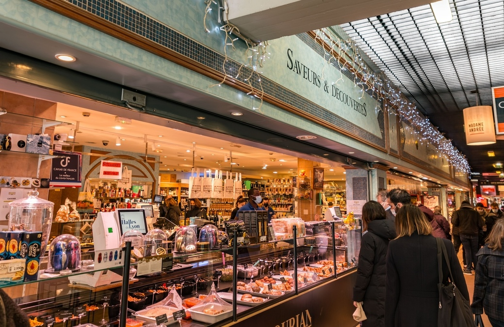
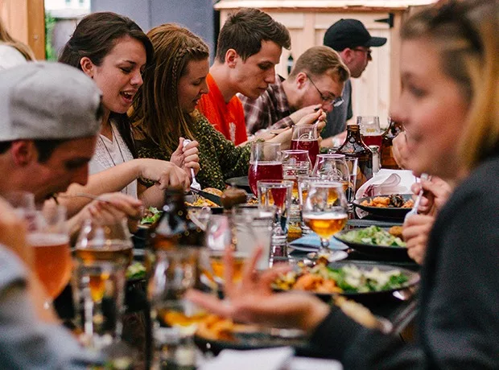
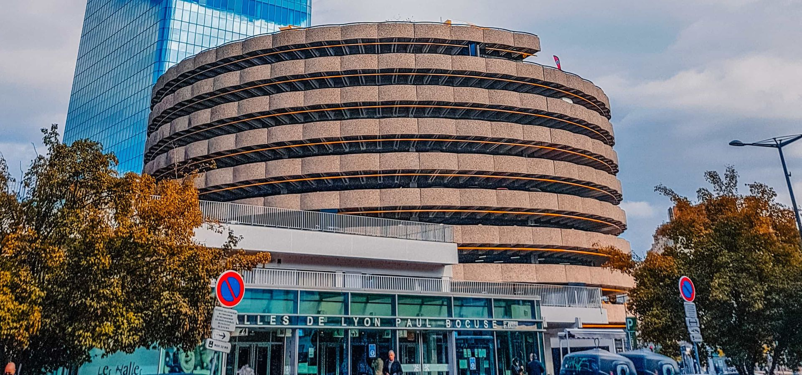
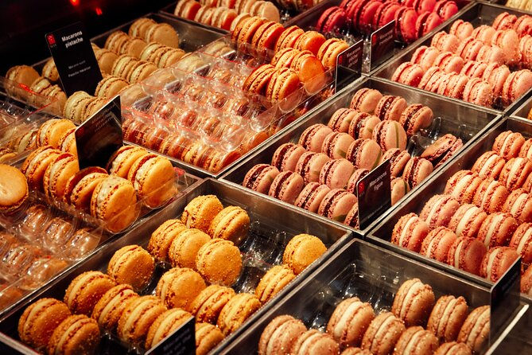

Les Halles de Lyon Paul Bocuse is a famous indoor food market in Lyon named after the legendary French chef Paul Bocuse. The market celebrates Lyon’s reputation as the gastronomic capital of France and showcases the region’s rich culinary traditions.
Inside the market, visitors will find a wide variety of gourmet products including cheeses, pastries, chocolates, seafood, and traditional Lyonnaise dishes. Local vendors and chefs offer tastings and freshly prepared meals, creating a lively atmosphere filled with aromas and flavors.
Today, Les Halles de Lyon Paul Bocuse is a paradise for food lovers and culinary explorers. Its vibrant stalls and authentic local specialties provide visitors with an unforgettable taste of Lyon’s celebrated gastronomy.


